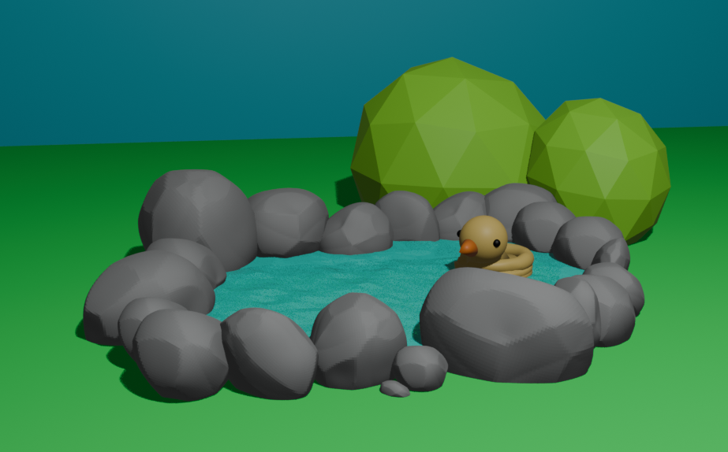
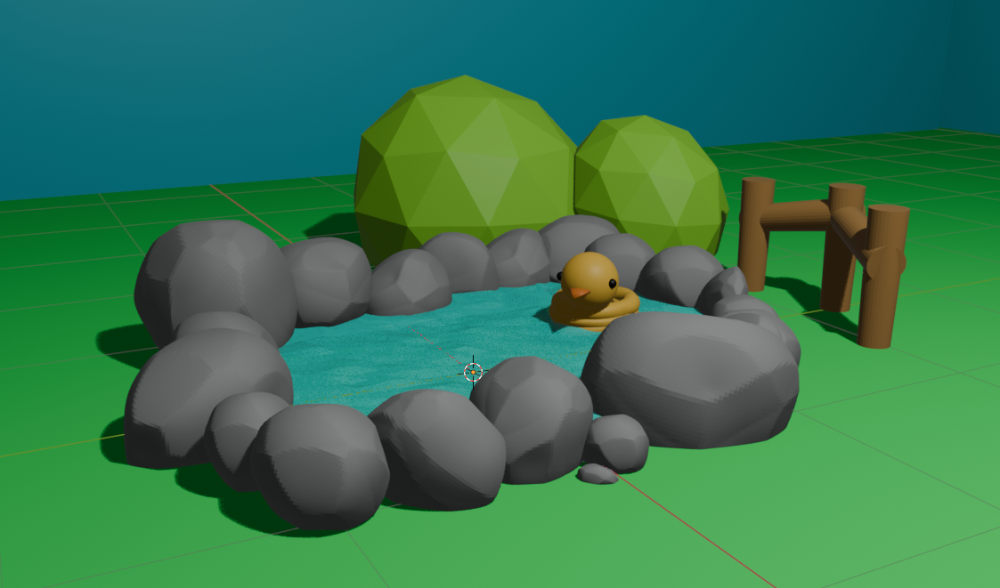
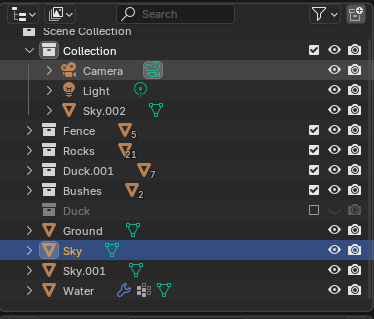

I wanted to create a scene that is wholesome and cute, meanwhile not complicated enough so that I can create with low poly techniques. Here I started with a very rough skecth on my tablet, which I think that the 3D version of it will be very cute and nice to have.
First, I would like to start with all the rocks.
I first imagined that I can try to combine a Ico Sphere
and a Cube to create a rock so that the base of the rock
can be flat and the top can be more rounded with edgeds that
I can modify to make them more nature. However, I got stucked,
so that I decided to google how to create rocks in Blender.
I found a tutorial instead
to build rocks, and I learn that I can use modifier and texture in combination
to create a rock that looks more natural. I followed the steps in the video,
and I created a rock that I am satisfied with.
After I created the rock, I duplicated it to make it into a irregular circle on Z-axis that looks like what a hot spring will have and modified them a little bit to make them look natural.
For the water, I created a cube with some depth to make the water more realistic. Then I used the same texture that I used for the rock to create some waves on the surface of the water (reference). I also adjusted the transparency and color of the water to make it look more realistic.
By working on the water surface, I learned how to divide the surface into multiple smaller parts in order to 1) modify and apply texture to it and 2) change the shape of a cube to fit into the shape of the rock circle. Now that I have a relatively working water, I am also including the grass/ground to see whwther all of my stuff work togethor so far.
I struggled with modling a 3D rubber duck. I tried to look for sources online but most of them are not what I would like to have for my ideation. I tried to create it with lowpoly techniques, but it does look a little sad and creepy. I even tried to sculpture it to make it looks bit better.
Struggled with making the rubber duck more smooth, I decided to create the bushes as I ideated before. I created two Ico spheres and modified them to look like bushes.
And I decided to add some fences to make the scene more complete, because why not? I learned from the manuals in terms of how to combine the fence combinations togethor and smooth the borders. But the fences look good this way so I kept them as they are.
Now that everything except the duck looks good, I want to try more to make the duck better. The sculpting tools are very confusing to use. No matter how I tried, I just cannot make it do the things I want to. After browsing a few videos, I decided to re-model the duck with different combinations of shapes and using knife tool with scale tools to twick them into shapes that resonate with a rubber duck. I also tried sculpture it a little bit to make it more smooth.
Finally, I added some lights and rendered the image. I am relatively happy with how it turned out. I feel more famialir to the system and am ready to explore more features very soon. I also want to work on some personal projects to make sure I am more familiar with Blender.
While creating and duplicating multiple items (for instance, rocks) I figured out a way to organize them: I learned to use Collections to group items together, so that I can hide/show them or modify them togethor easily. This is very useful and tidy up my files so that I can find things without much trouble.
Other than that, I am now very familiar in terms of how to grab, rotate, and scale objects in Blender with the help of three axis. I can also flawlessly modify the light and camera to render pictures that I want.